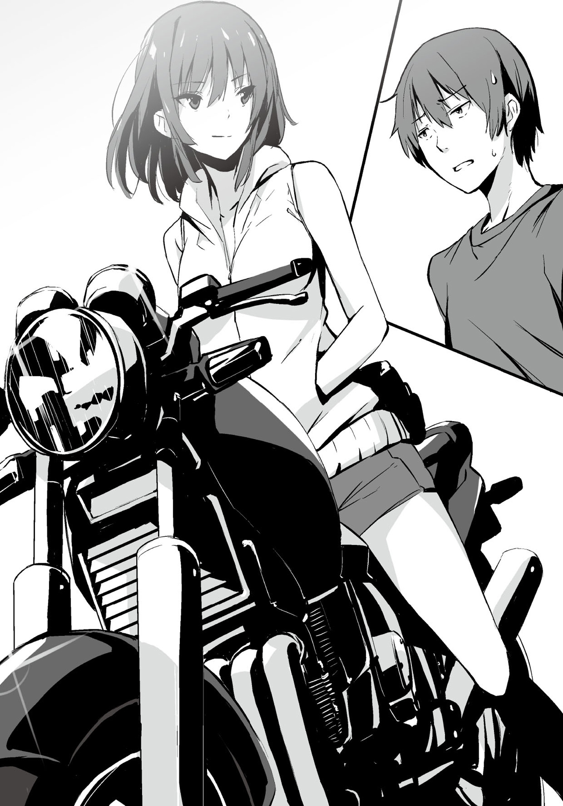

| 双子と幼なじみの四人殺し３【立ち読み版】 | |
| 森田陽一 | |

双子と幼なじみの四人殺し３
森田陽一
本書に掲載されているコンテンツの著作権等の知的財産権およびその他すべての権利は、ソフトバンク クリエイティブ株式会社または正当な権利を有する第三者に帰属します。
本書の内容を権利者の許諾なく複製・複写・翻案・放送・出版・データ配信（送信可能化を含む）などすることはできません。
カバー・口絵 本文イラスト
saitom
登場人物
菱川迷悟...............高校生。双子と一緒に住む。
新山一縷..................高校生。朽縷の双子の姉。
新山朽縷..................高校生。一縷の双子の妹。
菱川一途.....................迷悟の姉。連続殺人犯。
三川ミミ.....................保険医。裏の顔を持つ。
吉崎善果............高校生。三川になついている。
宇田川............三川の手伝いをしている便利屋。
胡桃沢美貴......高校生。先月、一途に軟禁された。
石上薄..................十二年前に死んだ放歌の夫。
石上放歌......迷悟の叔母。旅館を経営している。
青座............高校生。放歌の旅館のアルバイト。
貴島為人.....................漁師。放歌の幼なじみ。
海沼益........................サプリメント会社社長。
八月十日。
菱川迷悟は先月、久保園秤と名乗っていた女──菱川一途から話を聞くため、電車に乗り、待ち合わせの駅に向かっていた。迷悟が電車に乗るのは二週間ぶり──七月に双子と行った夏休みの旅行以来だ。
車内は、今日がお盆の始まる週の土曜日で、しかも、都心方面に向かう電車ということもあり、かなり空いている。普段より人が少ないのに冷房を弱くしていないのか、少し寒い。
迷悟は気が重かった。決して、一途に会いたくない、というわけではない。彼女とは夏休みに入った頃からメールで連絡を取り合っているし、七月には実際に会い、行動を共にした。関わるべきでない人間だということは重々承知しているが。
迷悟が気に病んでいるのは、これから一途に聞かされる話の内容だ。自分と双子が入れ替えられて育てられた理由と、それに付随する両親の過去の話。迷悟は既に、前情報として、それが気分のいい話ではないことを知っていた。人が何人も死んでいる話だからだ。だが、聞かざるを得ない。これは今、自分と双子が、このような歪んだ関係に陥っている理由なのだから。もっとも、原因が分かったところで、今の状況が改善したりはしないだろうが。
──電車が目的の駅に着いた。迷悟は、今日、ここに来ることを双子には話していない。双子は、一途に会うことも、話を聞くことも快く思わないだろうし、了承しないだろうから。
迷悟が改札を抜けると、既に、一途が待っていた。ノースリーブのパーカーを着ていて、そのフードをキャップの上から被り、下にはショートパンツ。多分、夏が終わるまではこの格好なのだろう。旅行中は男物のヒップバッグをしていたが、今日はしていない。
「よく来たね、迷悟。久しぶり」
一途は微笑みながら声を掛けてきた。迷悟は、彼女のその表情が自分だけに見せるものだということを、なんとなく分かっていた。そういう毒にも薬にもならない偏愛のせいで──色々と彼女に対する感情が揺らいでしまう。迷悟はそんな気持ちを一途に悟られないよう、表情を変えず、ただ軽く頭を下げた。
一途は迷悟の様子に再度微笑むと、彼の手を取った。
「行こう。今日はウタちゃんに一日中、外に出てもらっているの」
迷悟には一途の言葉の意味が分からなかった。しかし、どうでもいいことだ。するべきことは過去の話を聞くことだけだ。それで、終わりだ。彼女の事情なんて、どうでもいい。
迷悟は一途に手を引かれるまま、歩く。手を解こうかとも思ったが、やめておいた。殺人鬼の心情なんて、いくらでも蔑ろにしていいはずだが──彼女は殺人鬼である前に姉だ。それに何か違うのだ、手の感触が。双子に手を握られているときよりも、今のこれは優しい気がする。もちろん、双子のそれも優しいには優しいのだが、なんというか質が違うのだ。その感覚の差異を人に説明するのは酷く困難だが──違うことは明らかだ。
一途は五分ほど歩くと、コンビニの前で止まった。
「飲み物を買ってあげるね」
一途はそう言って、店の中に入った。数分後、彼女はカルピスのペットボトルを二本、買って出てきた。そして、一本を迷悟に渡す。迷悟は何も言わず、それを開けて飲み始めた。
「さすがに暑いね」
彼女はそう言うと、ペットボトルを持っていない方の手で額の汗をぬぐった。彼女のフードの奥に見える、キャップから流れる髪は、汗のせいで束になり、頰に張り付いていた。
迷悟も一途と同じくらい汗をかいていた。今は七月に旅行へ行った海よりも暑い。ヒートアイランド現象のせいかも知れないし、単純に、今が一番暑い時期だからかも知れない。だが、この暑さは海の暑さとは違い、行き場のない、纏わり付くような、気怠い暑さだった。
一途は迷悟の手を握ると、また、歩き始めた。そして、もう十分ほど歩くと、「ここ」と、言って、古そうなアパートの前で止まった。しかし、そのアパートはリフォームをしたのか、古そうな壁の質感とは違い、ドアやインターフォンなどは綺麗だった。古いものと新しいものを無理矢理共存させたような、ちぐはぐな感じのする建物だ。
一途に案内されたのは二階の端から二番目の部屋だった。彼女は鍵を使い、その部屋のドアを開け、体を開く。そして、掌を上にし、迷悟に、先に入るように促した。
迷悟は「おじゃまします」と言って、中に入る。夏の、閉め切っていた部屋特有のむわっとした熱気が押し寄せる。
迷悟が玄関で靴を脱いでいると、
「暑いね」
と、一途は玄関に靴を乱暴に脱ぎ散らかし、迷悟の横を小走りで抜け、部屋の中にある扇風機のスイッチを入れた。そして、窓を開け放ち、外気を取り入れ始める。迷悟は、窓を開けても大して涼しくならないだろうと思った。だが、閉めているより、気分的にはマシだろう。
一途は、迷悟の表情から、考えていることを読み取ったのか、
「エアコンはないの、ごめんね」
と、少し申し訳なさそうに言った。
「大丈夫だ」
迷悟は短く答え、部屋の中まで入る。扇風機の首振りが自分の方に向き、風が体に当たるときだけは、汗の気化熱でかすかに涼しい。
その部屋はパソコンとゲーム機があるだけの殺風景なものだった。大きさから見ると単身者用の物件なのだろう。しかし、布団は二組ある。
「ワタシね、今ね、ウタちゃんのところで居候してるの」
「............」
「おねーちゃんが知らない男の人のところにいて、嫉妬した？」
「別に」
迷悟は〝ウタちゃん〟とやらをなんとなく女だと思っていたので、確かに予想外ではあった。だが、嫉妬の感情なんて発生しなかった。それに、彼女が姉だというのも、迷悟にはよく分からない。姉というものがどういうものなのか、うまく理解できない。自分にとって、姉というものはどういう役割を持った存在で、どう接すればいい存在なのか分からなかった。そもそも、目の前の彼女を姉の範疇に入れていいのかも不明だ。──それ以前に、姉が知らない男のところにいたときに嫉妬するべきなのかどうかも、分からなかった。
「でもね、ワタシね、ウタちゃんとは付き合ったりしていないからね。もし、誰かと付き合うときはちゃんと迷悟に報告して、許可を得るから、大丈夫よ」
「そんなこと必要ない」
迷悟はぶっきらぼうに答えた。それに、迷悟は目の前の殺人鬼が人付き合いなんてものをできるのか、甚だ疑問だった。
（とはいえ、俺は結構普通に付き合っちまってるけどさ......）
迷悟はそんなことを考えていると自然とため息をついてしまった。
一途はそんな迷悟の様子に優しげな視線を向けている。
「──じゃあ、そろそろ本題に入るね」
迷悟は一途と目を合わせたあと、小さく頷いた。
一途は、部屋の奥のリュックサックから、日記帳のようなものを取り出すと、
「分かったことを教える──と、言いたいところなんだけどね............」
と、言葉を濁しつつも、続ける。
「この話はワタシですら胸くそが悪くなるような、最悪の話なの」
彼女はそこで一息おいて、カルピスのペットボトルのキャップを開け、中身を一口飲んだ。
「ワタシとしては聞かないことをお勧めするわ──でもね、迷悟がね、聞きたいと言うのなら、話さないわけにはいかない。そういう約束だからね」
迷悟は考える。この話を聞くことの意味を。別に、自分の両親のことなんて知らないでいたってなんの問題もない。歴史に名を残すような人物の過去なら聞くことに意味はあるだろう。だが、彼らはただの人間だ。でも、この話は双子や自分の出自に関係している。迷悟は、ならば、自分が代表して聞くべきだ、と思った。きっと、この話こそが自分と双子の関係がねじれにねじれてしまった最初の原因なのだから。
だから、迷悟は、
「聞く」
と、短く答えた。
その話を聞いたところで、双子との関係が普通の幼なじみの関係に戻ることはないだろう。原因が分かったところで、過去は変えられないのだから。
だが、それでもだ。
双子がこの事実に り着いたりする前に、自分が責任を持って聞いておかなければならない。双子にこの話を触れさせる前のクッションになることぐらいしか、自分にはできないのだから。
り着いたりする前に、自分が責任を持って聞いておかなければならない。双子にこの話を触れさせる前のクッションになることぐらいしか、自分にはできないのだから。
十一年前の夏。
海沼益は空き巣をしていた。好きでやっていることではない。しかし、彼にはこれしか生きる道がなかった。既に二度、逮捕されてしまっている。今更、真っ当な人生になど戻れない──少なくとも、そのときの彼はそう思っていた。
海沼はある寂れた村に来ていた。空き巣は都会でやった方が、実入りがいいのだが、彼は、夏だけはいつも地方で仕事をしていた。
理由は一人暮らしで尚且つ、昼間、外に出ている老人の家に入りやすいからだ。一人暮らし故、家主さえ外に出ていれば、家に人がいないことがすぐに分かる。更に生活パターンが単調なので、盗みに入るタイミングを計りやすい。その上、意外と家にある現金の量が多かったりもする──等、これらの理由はきっと、後付けの理由なのだろう。多分、冷静にリスクリターンを検討すれば、さして都市部と変わらないという結果になるはずだ。それならば、何故、地方に行くのか──海沼は、もう、夏に地方へ行く理由を忘れてしまった。もしかしたら、最初は夏休みのつもり──そう、気晴らしのためだったのかも知れない。そして、今となっては恒例行事みたいなものだ。
海沼は夏のパターンとして、一度、空き巣をしたら、その地域から離れることにしていた。捕まらないための方策だ。人が少ない地域において、他所者は目立つのだ。だが、こまめな拠点変更のおかげか、夏の空き巣で捕まったことはない。捕まったのは二度とも冬のことだ。
だから、海沼は夏が好きだった。気温や空、セミの鳴き声や夕立のあとのアスファルトの臭い──夏に関するすべての事柄が、自分の味方であるような気すらしていた。
そんな彼は今回の空き巣のターゲットを既に決めていた。
旅館だ。といっても、旅館本体ではない。旅館を経営している人間の家だ。海沼が二、三日観察したところ、その旅館は女性一人で経営されているようだった。未亡人なのかも知れない。
そして、その女性はあまり家に帰って来なかった。予想するに、旅館の仮眠室か何かで過ごしているのだろう。少なくともシーズン中は忙しくて、家に帰る暇がないと見受けられた。
海沼は、今回は楽そうだな、と思った。それどころか、犯行が発覚するのも、家主が家に帰ってこないので、随分先になるかも知れない、と思った。
犯行当日。
海沼はいつもどおりの手はずで家の中に入った。実際、今回は酷く簡単だった。夏の時期、この地方の人の流れは完全に海へと集中しているため、この家の近くには人がおらず、やはり、家主が帰ってくる気配もなかった。
しかし、悠長にしているわけにはいかない。ことはさっさと済ませるべきだ。
海沼は乱暴に家の中を探していく。お目当ては現金とすぐに換金できるものだ。一攫千金は求めていない。数をこなせばいいのだから。だが、現金は数万円しか見つけられなかった。換金できそうなものは、ごく僅かなビール券だけ。海沼は、旅館経営なら金を持っているのではないかと、なんとなく思っていたが、どうやら、そんなことはなかったようだ。世間は一様に不景気なのかも知れないし、旅館経営は一見華やかだが、内情は火の車なのかも知れない。
だが、海沼は盗みの最中、それとは別に、一つ気になるものを見つけてしまった。
それは手記だった。
普段は絶対にそんなものを盗まない。金にならないからだ。
しかし、何故か、それに惹かれた。
盗みの成果が上がらなかったので、とりあえず、なんでもいいから手に入れたかったのかも知れない。それに、しまってあった場所も問題だ。その手記は随分と大切そうに保管されていた。まるでこの手記に価値がありますよ、とでも言わんばかりに。
海沼は、そろそろ立ち去らなくてはならない、と思ったとき、咄嗟に手記を盗むことを決断した。普段なら、絶対に選択しない行動だ。だが、その手記に──何か運命的なものを感じたのだ。こんな感覚は初めてだった。きっと、天候も要因の一つだろう。その日は酷く暑く、アスファルトからの照り返しで、風景が歪んで見え、雲はもくもくと大きいくせに、空の青は雲の白さに負けず、ひたすらに青く──まさに夏という感じの一日だった。海沼にとっては、絶好の盗み日和。こんな日の直感が間違っているわけがない、そう思わせるには十分すぎる一日だった。海沼は、あとにも先にも、これ以上の夏の日を経験したことがなかった。
だから、海沼はそれを盗んだ。
もちろん、こんなものに価値がないことは頭では十分に理解できている。だが、何故か、それには価値があるような気がして──その感覚がぬぐい去れなかったのだ。
＊
七月二十一日。菱川家。
「んじゃ、夏休み旅行の計画を発表するぞー」
迷悟は、昼食の焼きそばを食べ終えたところで、一縷と朽縷に言った。
「おー」
一縷が嬉しそうに手を叩いた。それにつられて、朽縷も少し遠慮がちに手を叩き始める。しかし、いかんせん、拍手をしているのが二人なので、寂しい拍手だ。
「夏は叔母さんの民宿に行くことになりました」
一縷が拍手するのをやめる。朽縷は少しペースが落ちたものの、まだ拍手をしている。多分、一縷が拍手をやめた理由が分からず、やめるタイミングが摑めなかったのだろう。
「いやいやいや、あたし、それはやめようって言ったよ！」
一縷が抗議の声を上げる。迷悟も一縷に文句を言われることは覚悟していた。
「......知ってる」
「知ってるなら、なんであそこにしたのさ！ 去年も行ったじゃん！」
「迷悟。叔母さんがやっているのは民宿じゃなくて旅館だぞ。叔母さんは別に、旅館以外の仕事をしていないからな。それに部屋も六部屋あるし」
朽縷が話の内容から外れた、どうでもいいことを言い出す。
「やだやだ嫌だ！ ほかのところがいい！ 高校一年生の夏休みだよ!? 人生に一度きりなんだよ？ 絶対に嫌だよ！ 朽縷も嫌だよね！ だよね！」
「私も別のところがいいかな。あそこ、何もないし。というか、私としては旅行じゃなくて、普通にどこかへ遊びに行くだけでもいいんだけど」
「ほら、二対一だ！ 迷悟！ 撤回しなよ！」
一縷が興奮して、コップを箸で叩き始めた。すぐに朽縷に「馬鹿、やめろ」とはたかれて、やめさせられたが。
「......いや、叔母さんが顔を見せに来いって言ってるんだよ。正月とかお盆じゃなくていいから、一年に一回ぐらいは来い、と。で、もう電車の予約しちまったから、変えられない」
一縷は、迷悟の言葉を聞いても、ふくれっ面のままだったが、一応は黙った。
迷悟の叔母──石上放歌は迷悟と双子が今の生活を始める際、色々と手を回してくれた人物だ。家の売買やら、保険金の受け取りやら。立場的には迷悟の後見人で、迷悟と双子が一番、世話になっている人物だ。
だから、一縷も文句を言えないのだろう。
「それなら、仕方ないな。まぁ、あそこでも、楽しもうと思えば、楽しめるだろうし」
一縷とは対照的に、朽縷はすんなりと了承した。もともと、朽縷としては、行きたくないというよりも、行けるならほかのところがいい、といった感じだったのだろう。
「一縷もいいだろ？」
迷悟が聞くと、
「うー......しょうがない」
と、一縷は際限なく不満そうにしながら答えた。
「でも、でも、じゃあ、ほかのところにも行こうよ！ 朽縷の言うように泊まりがけじゃなくたっていいからさ！」
「ああ、考えとく」
「あー！ その言い方、絶対行かないつもりだ！」
「うるせーな。じゃあ、『検討する』に言い直してやるよ」
「同じだし！」
「じゃあ、なんて言えばいいんだよ!?」
「......逆に聞くけど、迷悟は行きたいところとかないのか？」
朽縷が、迷悟と一縷がこれ以上騒がないようにか、絶妙なタイミングで聞いた。
迷悟は、行きたいところを少し考えたが、思いつかなかった。遊園地なんかは行きたいと思えないし、博物館や映画館に関しては面倒くさいという気持ちが先行し、さほど興味が湧かなかった。だから、すぐには、ほかの行きたいところを思いつかなかった。強いて言うなら、双子の行きたいところが自分の行きたいところかも知れない。つまり、迷悟も二人と出掛けたくないわけではない。でも、『お前らの行きたいところが、俺の行きたいところだ』なんて、恥ずかしくて、とてもじゃないが言えないので、「別に」と短く答えておいた。
「じゃあさ、じゃあさ、デートしようデート！」
一縷が、何故か、きらきらとした笑顔を浮かべ、嬉しそうに言った。
「デート？」
「そう、デート！ もちろん、あたしと二人でね、別の日に朽縷とデートしていいからさ」
「ああ、それはいいな」
その案は朽縷も気に入ったようだ。
でも、迷悟としては三人で遊んだ方がいいような気がした。きっと、双子はデートから帰ってきたら、お互い、相手が何をしていたか気にするだろうし、下手をしたら、日を違えて、同じところで食事をし、同じ映画を見て......ということになりかねない。
「遊ぶなら、三人の方が楽しいんじゃねーか？」
「馬鹿なの？ 迷悟」
「馬鹿か？ 迷悟は」
双子の息が久しぶりに合う。
「いや、でもさ......」
「いや、でもさ、じゃなくて。こういうのは二人きりだから意味があるんじゃん」
「いや、でもさ、じゃないぞ。こういうものは二人きりじゃなきゃ意味ないだろ」
迷悟も、双子の息がここまで合うのは久しぶりに見た。数年ぶりな気がする。多分、小学生時代までらないとないだろう。
迷悟は、ここで何か言っても逆効果だろうと思い、
「分かった、分かった、考えとくよ」
と、口早に言った。
「また、考えとくだー」
一縷が再度、文句を言う。
「もう、いいから......四日後の二十五日の朝に出発だから用意しとけよ」
「はやっ!? 迷悟、急すぎるよ！ せめて一週間前には教えてよ！」
「別に用事ないだろ」
「ないけどさー」
「急に決まったんだから仕方ないだろ」
迷悟の叔母である放歌から、八月は旅館の仕事が忙しいので七月中に来てくれ、と言われたのだ。しかも、つい最近。だから、こういう急な予定になったのだ。
「今度はもうちょっときちんと決めるように」
迷悟は、朽縷にも文句を言われ始めたところで、部屋に退散することにした。
この旅行──迷悟には〝叔母さんに来るように言われたから〟以外の理由もあった。
それは、菱川一途との約束のためだ。
ことの始まりは、先月の事件のあと、一途から送られてきたメール──試験最終日の屋上への呼び出しのメールだ。迷悟はそれをなんとなく、アポイントのためだけの、一回きりのものだと思っていたのだが、メールはそこで終わらなかった。それ以降も続いた。
当初、迷悟はメールを返さず、受信拒否をしようとも思っていたのだが、彼女が姉だという事実を知っていたため、受信拒否に踏み切れず、更に一途があまりにもしつこかったので、つい、返信してしまい、その流れでずるずると、メールのやりとりを続けてしまっていた。迷悟は、その中で彼女の本名や、今、彼女がやっていることを知った。
一途がやっていること──それは、迷悟と双子が入れ替えられて育てられた理由をより正確に推察するべく、迷悟と双子の両親について調べている、という話だった。更に、一途はそれに付随して、気になる事件を見つけたと、迷悟に連絡をしてきた。
それは、迷悟の叔母──石上放歌の住む村で二十四年前と十二年前に起きた二つの事件に、迷悟と双子の両親が関わっているのではないか、という話だった。それに加え、そのことについて石上放歌が何か知っているのではないかとも、一途は書いていた。一途と放歌は迷悟が産まれる前には会ったことがあるかも知れないが、今となっては、ほぼ無関係だ。なぜなら、今の彼女は戸籍等の登録では菱川一途ではないからだ。菱川一途は既に死んだことになっている。迷悟の前では便宜上、菱川一途と名乗っているが。
また、一途はメールの中で、事件の真相が分かれば、迷悟と双子を入れ替えた理由が分かるかも知れない──というようなことを書いていた。その書き方から、彼女には大体の予想が付いているものと思われた。
そして、迷悟は一途に、一緒にこれらの事件を調べに行かないか、と誘われたのだ。迷悟も一途が自分を誘った理由が、放歌から話を聞き出す役目を任せるため、だということはなんとなく分かっていた。そして、それしか方法がないだろうことも理解していた。放歌と関係のある人間──話を聞き出せる人間は、この世に自分くらいしかいないからだ。放歌は夫を亡くしていて、親兄弟も、もういない。親戚も遠い者しかおらず、甥の迷悟ぐらいが近しい関係なのだ。
当初、迷悟は、一途と行動を共にするなんて馬鹿げている、と思ったのだが、一途の提案は迷悟の知りたいことでもあった。今更、入れ替えられていた理由を知ったところで、もう取り返しがつかないのは分かっているが──知るチャンスがあるのに知らないでいられるか？ と言われれば、話は別だった。
だから、迷悟は最終的に一途の提案を了承した。
だが、一人で数日間、双子を置いて、家を空けることができなかったので、このような旅行を企画したのだ。叔母からの連絡は渡りに船だった。
迷悟は、双子を しているようで、気が重かったが、仕方ないと割り切った。彼は一途と連絡を取り合っていることはおろか、久保園秤が生きていて、今は別の名前を名乗っていることや、彼女が自分の姉であることすら、誰にも言っていないのだから。
しているようで、気が重かったが、仕方ないと割り切った。彼は一途と連絡を取り合っていることはおろか、久保園秤が生きていて、今は別の名前を名乗っていることや、彼女が自分の姉であることすら、誰にも言っていないのだから。
＊
七月二十五日。
その日、迷悟たちは朝の五時に起きて、六時になる前には家を出た。これ以上遅く出ると、乗り換えの都合で、目的地の旅館へ当日中に着かなくなってしまうからだ。
今は、三つ目の電車に乗っているところだ。このあと、バスに乗り換える予定だ。しかも、バスに乗ったあとも停留所に車で迎えに来てもらわねばならない。バス停から旅館までは歩けない距離ではないのだが、夏の暑い中を一時間近く、旅行用の荷物を持って歩くのは酷だ。通常、あの旅館へは車で行くのだ。しかし、迷悟たちは車に乗れないし、迷悟の叔母の放歌も仕事中なので、家まで迎えに来てもらうわけにはいかず、このルートを取らざるを得なかった。
「やっぱ遠いなー」
一縷は電車の窓から景色を眺めながら言った。彼女は前日までは文句を言っていたものの、旅行が始まると、存外、楽しそうにしていた。朽縷は二つ目の電車に乗って、駅弁を食べ終わってからはずっと寝ている。
「距離自体はそんなでもないんだけどな」
迷悟も景色を見ながら言った。ここまで来ると、人家はかなりまばらで、田んぼも見える。
「そうなの？」
「大阪よりは近いんじゃねーか？」
迷悟は頭の中で、住んでいるところを中心にコンパスを回転させてみた。多分、大阪よりは近いだろう。ぎりぎりではあるが。
「何それ、大阪は普通に遠いし」
「でも、大阪なら新幹線ですぐじゃねーか」
「そんなこと言ったら、沖縄だって飛行機使えば、大阪より早く着くし。そうだ、沖縄行こう！ 意外と夏はこっちよりも気温が低かったりするらしいよ？」
「急に話が変わったな。それに沖縄だと今からじゃ予約取れないだろ？ 夏だし」
「そこは迷悟が頑張りなよ」
「あと、高いからダメだな。──それにしても、朽縷はよく寝てるな」
迷悟は、行けもしない沖縄の話をするのも億劫だったので話を変えた。
「昨日、旅行が楽しみすぎて眠れなかったんだと思う」
「そうなのか。意外だな。まぁ、朝も早かったしな。一縷は眠れたのか？」
「うん、普通にね。あたしはそういうの、ないし。迷悟は眠れた？」
「ちょっと眠れなかった」
「興奮して？」
「......まぁ、そういうことになるな」
でも、それだけではなかった。少し不安があったからだ。現地には、既に菱川一途がいるはずなのだ。彼女がいることで、どういう事態になるか、予想ができなかった。双子に手を出さないという約束はもちろん取り付けてはいるが──やはり、何をするか分からない人間だ。
「迷悟も朽縷も子供だなぁ」
一縷はにやにやした顔で、お菓子の袋を開けると、中のお菓子を一つ、迷悟に渡した。
「じゃあ、お前は大人なのかよ？」
迷悟は、一縷にもらったお菓子を口に入れる。
「まっ、今のところね」
一縷は先程のお菓子を自分でも食べ始める。
「なんだよそれ、お前は子供に戻るのかよ」
迷悟は一縷の言葉がおかしかったので、少し笑った。
「──かもね」
一縷はそう言って、また景色に目をやった。
「でも、あたしもちゃんと楽しみだよ。迷悟との旅行は一年ぶりだしね」
「だな、夏休みごとって感じだな」
「いっぱい遊ぼうね」
一縷は迷悟に笑いかけた。
「ああ、そうだな」
＊
三人は最後のバスを乗り終え、停留所のベンチで迎えの車を待っていた。ここの停留所は小屋を真っ二つに切断したような形──三方に壁があるタイプのものだ。屋根の下で日陰にはなっているものの、それでも暑い。
「なんか、ここに来るまでに結構疲れたね」
朽縷は伸びとあくびを同時にしながら言った。
「朽縷は寝てたくせに」
「まぁ、そうなんだけどね」
「俺も寝ておけば良かったかな」
「そしたら、あたし一人じゃん」
「お前も寝たらいいじゃねーか」
「そんなことしたら、絶対、三人で寝過ごすし」
迷悟たちが、どうでもいい雑談をしていると、三人の元へ十人乗りのワゴン車が走ってきた。迷悟が、このマイクロバス一歩手前のようなワゴン車を見るのは一年ぶりだった。
「よぉ」
車の窓を開けながら声を掛けてきたのは迷悟の叔母──石上放歌だった。Ｔシャツとジーパン、そしてエプロンという、旅館の女将らしからぬ格好をしている。迷悟の記憶している限りでは、放歌はいつもこのような格好をしていた。そんな格好のためか、彼女はかなり若く見える。迷悟が憶えている中で、彼女がラフでない格好をしているのを見たのは、去年の葬式での喪服ぐらいだった。もっと幼い頃には一度か二度、見ているはずなのだが、さすがに憶えていない。
「お久しぶりです」
迷悟が先に頭を下げると、双子も同じように、
「お久しぶりです」
と、 って頭を下げた。
って頭を下げた。
「おう、久しぶり。暑いから早く乗りな」
三人はドアを開けて、車に乗り込む。
放歌はその場で車をＵターンさせて、来た道をそのまま戻っていく。少し走ると、海岸沿いの道路に出て、窓からは海が見えた。迷悟はこの景色で旅行に来ていることを再実感する。
「お前ら、元気してたか？」
「はい、おかげさまで」
迷悟は社交辞令風の言葉を返した。毎年、放歌に会ったときは、どうも距離感が分からなくなり、妙によそよそしい敬語を使ってしまう。しばらく過ごせば、勘を取り戻せるのだろうが。
「ねぇ、放歌さん。今日は、ほかの宿泊客の人っているんですか？」
一縷が身を少し運転席の方に乗り出しながら聞いた。
「今日は結構いるんだ。お一人様が一名と、二人で予約しているのが一組。だから、お前らを入れて六人だな──って、お前は一縷か？」
「はい、一縷です。去年はあたしたちだけだったのに。景気いいですね」
「去年がたまたまだったんだよ。てか、夏ぐらい埋まってもらわないと困る。冬は客来ないし。今年は、ほかに客いるから、あまり騒ぐなよ。一応、お前らの隣の部屋は空いているけど」
「そこまで、騒いだりはしませんよ」
放歌の注意に朽縷が答えた。
「お前が朽縷だな。......でも、大人しすぎるのもダメだな。高校生なんだから、多少はハメを外さないとだめだ。文句出たら、私が謝ってやるから、やっぱり、お前ら騒げ」
（なんだよ、それ）
と、迷悟は心の中で呆れる。
一行は十分ほどで旅館に着いた。信号もほとんどなく、まっすぐな道路ばかりなので、かなりスムーズな行程だった。
迷悟は車から降りると、咄嗟に目を閉じた。日が高く、日光を遮るものがないので、酷く眩しい。やがて、眩しさに慣れてきたので、徐々に目を開ける。すると、懐かしい風景が見えてきた。
迷悟は、毎年、ここへ来る度に思う──変わらないな、と。一昨年までは親と一緒に来ていた。双子とは毎年というわけではないが、それでも何回か両家族で一緒に来たことはある。
「車停めてくるから、お前らはロビーで待ってろ」
放歌はそう言うと、駐車場の方へ車を走らせた。
迷悟と双子は放歌に言われたとおり、旅館に入る。旅館の中は電気が点いているものの、外よりも随分暗く感じられた。
目的地に着いたことで気が抜けたのか、一縷は腕を引っ張りあげるようにまっすぐ大きく伸びをして、朽縷はあくびをした。
ふいに迷悟は、あと何回、この光景を見ることができるのか、と考えた。が、すぐに考えるのをやめた。折角の旅行なのに、そんなことを考えたくはない。──どうせ、あと少しだ。
＊
「んじゃ、とりあえず海行くか」
部屋の畳の上に荷物を置き終えた迷悟は、双子に声を掛けた。
この旅館のセールスポイントは、海まで徒歩〇分というところだ。逆に言うと、それ以外は何もない。自然があると言われれば、そうなのかも知れないが、道路は舗装されているし、天然林も山の近くまでいかないと、見ることができないので、自然があると断言するには、やや不足気味だ。
「賛成！」
一縷が両手を挙げながら言うと、
「そうだね、部屋にいても仕方ないしね」
と、朽縷も同意した。
三人は用意を終えると早速海に向かった。
迷悟は水着の上にＴシャツを着ていて、朽縷はＴシャツの代わりに無地の長袖のパーカーを着ていた。一縷だけは上に何も着ていない。下は三人ともビーチサンダルだ。三人はその格好で旅館を出る──ここは道路を一本横切れば、すぐに海なので、水着で歩いていても、まったく違和感のない場所だからだ。
三人は〇分で海に着く。この海は本当にただの海だ。遊泳区域を示すブイが浮いているわけでもなければ、海の家があったりするわけでもない。ただ砂浜と海水があるだけの海だ。
「あれ？」
一縷が声を上げた。
「どうした？」
「あそこ、ほら、人がいる。パラソルあるよ」
迷悟は一縷の指した方を見る。迷悟たちのほかにも海水浴客がいるようだ。珍しい。迷悟は十年以上、この海に来ていたが、ほかの海水浴客がいたことなんて、一度もなかった。
「もしかして、放歌さんが言っていた、ほかのお客さんかな？」
「そうかも知れないな」
迷悟は明言こそしなかったものの、まず、朽縷の言うとおりだと思った。ここら辺には、あそこ以外の宿泊施設はないし、この村の住民は高齢化が進みすぎていて、海水浴をする人間なんて、ほとんどいない。そして、隣町に泊まっている人間ということはないだろう。隣町にはちゃんとした海水浴場があるので、わざわざ何もないこの海には来ないからだ。それに、この村の住人も海水浴なら、隣町に行くだろう。折角のレジャーなのだから。ここで海水浴をするのは何も知らない余所者だけだ。
「まぁ、気にせず、遊ぼうぜ」
「そだね」
一縷はそう言うと、迷悟の腕に腕を絡ませてきた。迷悟はいつもなら、振り解いているだろうが、今日はなんとなく、そのままにしておいた。折角の旅行なのに、空気を悪くするのも面白くない。もっとも、一縷はそういう迷悟の行動すら、楽しんでいる節もあるが。
「二人とも、ちょっと待って」
朽縷が迷悟と一縷を呼び止めた。
「なんだ？」
「背中合わせに立ってくれないか？」
迷悟は、朽縷が何を意図してそんなことを言ったのか分からなかったが、朽縷に言われたとおり、一縷と背中合わせに立つ。
「迷悟も一縷も背筋を伸ばして────ああ、やっぱり」
「何がやっぱり、なんだよ？」
迷悟は聞き返す。
「迷悟の方が一縷より背が高くなってる。ちょっとだけど」
「まじで!?」
「噓だー」
喜んでいる迷悟とは対照的に、一縷が不満そうな声を上げる。
「本当だって」
「じゃあ、朽縷と迷悟で背比べてよ」
「構わないよ」
今度は朽縷が迷悟に背中を合わせて立った。
「お前らの身長は完全に同じっていう前提なのか？」
「それは同じだよ」
一縷はそう言いながら、迷悟と朽縷の体や頭を、互いに押しつけて背を測っている。
「......あり得ない。迷悟の方が高い」
「おお、なんか嬉しいな」
迷悟は、幼い頃からずっと身長で負けていたので、純粋に嬉しかった。最近は一日として、双子と離れずに過ごしていたので、身長を抜いたことに気付かなかったのだろう。
「そうすると、俺、百七十いったんじゃねーか？」
迷悟が一人喜んでいると、
「なんか迷悟......生意気だね。朽縷」
「ああ」
と、双子が意気投合し出す。
「生意気ってなんだよ？ 身長は仕方ねーだろ。それに、俺の背は高い方がいいだろ？」
「別に？」
と一縷は口をとがらせたが、朽縷は、
「んー......私は迷悟の背が高い方がいいかも」
と、微妙に前言を撤回した。
「えー、迷悟は背がちょっと低いぐらいがちょうどいいよ」
「身長の優位は捨てがたくはあるけど。それでも、私は、迷悟の背が高い方がいいな」
「だよね。小さい男の子も可愛いけど、やっぱ、彼氏の身長は自分より高い方がいいよね」
突然、一縷でも朽縷でもない女性の声が聞こえた。迷悟は声のした方を見る。そこにいたのは吉崎善果だった。水着を着ている。迷悟には、何故、ここに吉崎がいるのか、分からなかった。
一縷も朽縷も、迷悟と同じように状況が理解できないのか、絶句して固まっている。
「............吉崎先輩、あなたは、あの、ここで、何を？」
混乱から復帰した朽縷が聞いた。
「夏で、海で、そして、ここにいるのが私」
吉崎は最後の〝私〟のところで胸に手を当てた。迷悟は、全然答えになっていないと思ったが──吉崎が海に遊びに来たということは十分に伝わってきた。
迷悟が何か聞かなくては、と思っていると、パラソルの方に人影が見えた。距離は結構あったが、吉崎善果がここにいること、そして、パラソルから出てきた人間が髪を金に染めていることから、間違いなく三川だと思った。その女がもう少し近づいて来たところで、やはり三川だということが確認できた。彼女も水着を着ているが、泳いでいた形跡はない。これは吉崎もだが。きっと、二人は浜辺にいただけなのだろう。
双子は三川が近づいて来たので、各々、警戒したり、睨み付けたりしている。
「奇遇ね、善果ちゃんとの旅行の約束を果たしに来ただけなのに、あなたたちと会えるなんて。こんなこともあるのね。これが運命ってやつなのかしら？」
三川は白々しく言った。
「何が目的だ？」
迷悟は双子と三川の間に入り、聞く。
「菱川君、人の話はちゃんと聞くべきよ。善果ちゃんとの旅行の約束を果たしに来ただけ、って言ったじゃない。善果ちゃんとの旅行が目的よ」
「私はそんな約束をした憶えはないけど、そういうことみたいよ」
吉崎が口を挟む。
「いや、したでしょ。ほら、運転免許の話をしたとき」
「......？ 運転免許？ 車のですか？」
「そうよ、車のよ」
「ほうほう、つまり、カーライセンス。えーっと......憶えてないですね」
「憶えてないの？ ほら、前に保健室で将来の話をしたとき」
「将来の話？ 私、そんな恥ずかしいこと話したんですか？ 若気の至りじゃないですか」
「したわよ。善果ちゃん、免許欲しいって言っていたじゃない。でも、旅行をしたいわけではないとも言っていたけど、──確か、就職のためだっけ？ それで私が旅行に連れて行ってあげるって話になったじゃない」
「すみません......ガチで記憶にないです。憶えてないです......馬鹿ですいません」
「もう、いいわ............私たちも、あそこの旅館に泊まってるから、よろしくね」
三川は迷悟の方を向きながら、手だけで旅館のある方を指した。
「おい、〝私たちも〟って、なんで俺らがあそこに泊まっているって知っているんだよ？」
「普通に考えれば、ここら辺にはあそこしか泊まるところがないって分かると思うけど」
迷悟は口ごもる。先に、自分も二人が同じ旅館に泊まっていると推測したからだ。
「もういいよ、迷悟、行こう」
朽縷が迷悟の手を引いて海の方に歩き始めると、一縷もそれについてきた。
＊
迷悟と双子は三川たちから百メートルぐらい離れたところに、ビニールシートを敷いて荷物を置いた。迷悟がＴシャツを脱ぐと、朽縷もパーカーを脱ぎ始める。一縷と朽縷は、二人ともビキニタイプの水着を着ている。柄は違うが、形は同じ──のような気がする。体型が同じだから、そう見えるだけかも知れないが。
「なんで、あいつらこんなところにいるんだろ？」
一縷が三川たちの方を睨み付けながら言った。
「というか、どうしてバレたんだろう」
朽縷は少し不安そうな顔をしている。
「......そういえば、そうだね。うちのことが筒抜けになってるのかな？」
「家の中に盗聴器とか？ ないと思いたいけど......」
「まぁ、そんなことどうでもいいじゃねーか。あいつらのこと考えても楽しくないし」
迷悟は双子に言った。
「そだね、遊ぼう、遊ぼう」
迷悟は、もしかしたら、一途の方からバレたのかも知れない、とも思ったが、それを確かめたところで、三川を帰すことはできないだろうし、やはり、考えないのが一番だと思った。三川たちも普通に遊んでいるところを見ると、一応はただの旅行なのだろう。ならば、放っておけば、実害はないはずだ。学校でも、三川は、ひっきりなしに何かをしてくるわけではない。今までにあったのは、いたずらレベルの嫌がらせが数回と、菱川一途の一件だけだ。
「じゃあ、泳ごう！」
「いきなりかよ」
「だってビーチボールとか持ってきてないじゃん！」
「一縷、準備体操しないとダメだぞ」
朽縷はそう言うと、ストレッチを始めた。どうやら、朽縷も泳ぐ気らしい。そして、一縷は準備体操から逃げ出そうとしたところを朽縷に捕まえられ、ストレッチさせられていた。
（まぁ、俺も泳ぐか......）
迷悟も朽縷と同じようにストレッチをする。
「そういえば、荷物大丈夫かな？」
一縷が、前屈の体勢で、足の間から朽縷を見ながら、聞いた。
「どうして？」
「今日は人いるじゃん、ほら」
一縷は前屈の体勢から体を起こして、三川たちの方を指さす。
「それは大丈夫だろ、やったら犯人もろバレだし。それに──盗まれて困るものもないしな」
迷悟はそう答えた。今持ってきているのは、タオルと飲み物、そして日焼け止めぐらいだ。財布すら持ってきていない。財布を持ってきたところで、使い道がないからだ。ここから、徒歩二十分以内でお金を使える場所は、旅館にある自動販売機ぐらいだ。
「そだね！ じゃあ、行こう！」
一縷は一人駆け出し、波打ち際まで行き、振り向いて、歩いている迷悟と朽縷に手を振ると、
「競争しよう競争！ 競泳？ なのかな？ まぁいいや！ 泳ごう！」
と、大声で言った。
「競争ってどこまでだよ？」
距離があるので、迷悟も少し声を大きくする。
「向こう！ 行くよー！」
「向こうってどこだよ？」
迷悟は一縷には届かない声で朽縷に話し掛けた。この海の先にはブイもなければ、小島があったりするわけでもない。ただひたすらに海だ。
「ほんと、どこだろうね」
朽縷は少し笑いながら言った。
迷悟は朽縷の手を取り、少し小走りで海に向かうと、海から顔だけ出して手を振っている一縷のところまで泳ぎ始めた。
＊
海で遊び終えた三人は、砂浜で帰り支度をしていた。
「邪魔は入ったけど、楽しかったね」
朽縷がパーカーの袖に腕を通しながら言った。
「ああ」
と、迷悟が答えたところで、唐突に一縷が迷悟に抱きついてきた。
「なんか今日、迷悟、くっついても何もしないね？」
「まぁ、今日ぐらいはな」
「逆にちょっとつまらないんだけど」
「......お前は俺に一体、どうしろと？」
「なんか、あるじゃん、ほら、そういうの？ 朽縷は分かるよね？」
「うん、分からない。ほら、迷悟帰ろう、お風呂入りに行こう」
「そうだな」
迷悟が歩き始めると、一縷がわざとらしく、勢いよく迷悟から離れた。
「なんだよ、急に」
「──今、迷悟は逆にくっついて欲しくなってるはずだよ」
迷悟は一縷に付き合ってやろうと思い、
「ああ、そうかも」
と言って、頷いてみた。
「えー、それはないよ。そこはさ、『いや、別に』とか迷悟が言って、すかさず、あたしが抱きつくパターンでしょ？ それで迷悟が嫌がるっていう！」
「パターンってなんだよ、パターンって」
「ねー。朽縷なら分かるよねー」
「うん。分からないな──って下らないことやってないで、もう行こう。暑い」
「だな」
結局、迷悟と朽縷が歩き始めると、一縷は普通に迷悟の腕に腕を絡ませてきた。とはいえ、道路を一つ渡ってしまえば、すぐに旅館なので、それは本当に短い間だったが。
三人が旅館の前に着くと、そこには、放歌のほかに男性が一人いた。身長は百八十センチメートルくらいの、がっしりとした体格の男だ。頭は短く刈ってあり、黄色いＴシャツと白いハーフパンツを穿いていて、全身が──少なくとも見えるところは日焼けしていた。
「おう、お帰り」
放歌が声を掛けてきた。
迷悟は小さく頭を下げる。
「紹介するよ、こいつが私の甥で、双子の方はまぁ、姪みたいなもんだ。同じ顔してるだろ」
放歌は迷悟と双子の方を指さしながら言った。
男は三人の方を見た。だが、彼は笑いかけるわけでも、頭を下げるわけでもなく、ただ見ただけだった。真面目そうと言えば、聞こえはいいだろうが、迷悟はちょっと違う気がした。どちらかと言えば、余裕がないと取れそうな感じだ。
「んで、こいつは、貴島為人。私の幼なじみみたいなもんだ。学校はずっと一緒だった──まぁ、なんていうか、何故か地元を離れなかった、残り者同士みたいな感じだ。漁師やってて、たまに魚を分けてもらったり、市場で魚とか買ってきてもらったりしてる」
迷悟と双子は男に小さく頭を下げた。
放歌は貴島と迷悟たちを交互に見ると、
「お前ら、これから風呂か？」
と、聞いた。
「はい、そのつもりです」
迷悟は答えた。
「引き留めて悪かったな」
放歌はそう言うと、迷悟の肩を叩いた。
三人は部屋に戻ると、部屋内の洗面所で洗うものを分けたあと、一階奥の大浴場に向かった。
「混浴はないんだねー」
一縷が言った。
「だね。もし宿泊客が私たちだけなら、放歌さんに頼めば、なんとかなったかも知れないけど、今日は難しいだろうね」
「朽縷も混浴がいいのか？」
「折角だしね」
「あたしたちが最後に、三人一緒にお風呂入ったのって、五年くらい前だよね」
「そうだね。中学生になってからは、私と一縷が一緒にお風呂入ることもなくなったし」
「そういうもんだろ、じゃあな」
「じゃあね」
迷悟はそこで話を切り上げて、男性用の浴場の方へ向かった。迷悟は脱衣所に入ると、服を脱ぐ前に携帯電話を確認する。
メールが一件来ていた。菱川一途からだ。十五時半にこの旅館から歩いて十分ほどのところで待っているとのことだった。地図情報のＵＲＬも記載してある。更に、用件のあとに、五行ほど、自分も一緒に海で遊びたかった、みたいなことがつらつらと書いてあった。
迷悟は後ろの方の、遊びたかった、という恨み節は無視し、『了解』とだけ書いて返信し、来たメールと送ったメールを削除した。万が一、誰かに見られたときのことを考慮してだ。
迷悟が、湯船に浸かりながら、頭の中で状況を整理していると、ふいに、ため息が出た。
過去の話を知りたくないわけではない。双子に黙ってこういうことをしているので──気が重いのだ。双子は、自分が一途と会っていることを知ったら、確実に怒るなり、悲しむなりするだろう。しかも、ただ会っているだけでも、そういう結果になるのに、今は、わざわざ旅行に来てまでこういうことをしているので、始末に負えない。
（まぁ──バレなきゃ問題ないか）
バレなければ、自分が引け目を感じるだけで済む。双子の負担にはならないはずだ。知りもしないことを気に病んだりはできないのだから。だからこそ、バレないように万全を期さなければならない。そこらへんのことは一途の方でも配慮してくれる手はずだが、迷悟は自分でもできる限りのことはしようと決めた。注意しすぎても、しすぎるということはないのだから。
＊
一縷は体を洗い終え、朽縷と並んで湯船に浸かっていた。この旅館の大浴場は、洗い場が六つほどのさほど大きくはないものだ。浴槽の最大入浴人数は八人ほどだろうか。この浴室には出入りもできる大きな窓が付いているのだが、海が見えるわけではなく、白い石を敷き詰めた庭と呼ぶのもおこがましい何かと、薄茶色の竹の柵が見えるだけだ。もっとも、ここから海が見えてしまったら、海からもここが見えてしまうので、それは非常にまずいのだが。ここで使っているお湯は、温泉を薄めたもので、一応、温泉の範疇には入るものだという話だ。
「こうやって二人でお風呂に入るのも久しぶりだね」
一縷は自分から朽縷に話し掛けてみた。普段、二人のときは、ほとんど話さないが、旅行先の風呂でまで話さないのは、なんだか寂しい気がしたからだ。
「うん」
「最初はここ来るの微妙かなって思ってたけど、今はやっぱり来て良かったって気がしてる」
「なんで？」
「去年はさ、ここ来るまでは、あたしたち──なんか微妙だったじゃん」
一縷はかなり言葉を濁したが、朽縷は理解してくれたようで、
「そうだね」
と、答えた。
去年、三人で暮らし始めてから一学期の終わりまでは、三人の関係は本当にぎくしゃくしていた。だが、旅行のあとくらいから、なんと言うか、しっくりくるようになったのだ。遠慮する部分としなくていい部分が分かりあえたというか。それが、夏休みで時間的余裕があったための結果なのか、旅行に来たことが要因なのかは分からないが──一縷はなんとなく、旅行に来たおかげだと思っていた。というより、今日から、そう思うようにしようと思った。
「だからさ、ここはそこまで楽しくないけどさ、毎年来るのもいいかなって思って。迷悟にもそう提案してみようかな。朽縷はどう？」
「いいと思う。迷悟もきっと、賛成すると思う」
朽縷の言葉が終わるのとほぼ同時に大浴場の入り口のドアが開き、三川と吉崎が入ってきた。
一縷は彼女らを睨み付ける。だが、三川と吉崎はそれに対し、特に反応しなかった。
「すごい、三川先生師匠、見て下さい！」
「......すごい？ 別に普通じゃない。むしろ小さいかも」
「お風呂じゃありません。一縷ちゃんと朽縷ちゃんです、二人とも髪を上でまとめてて、まとめ方も同じで、服も着てないのでマジそっくりです、本気で一卵性双生児です」
吉崎は不躾に、右手と左手で同時に、一縷と朽縷を指さした。
「ほんとだ」
三川は双子に近づくと、浴槽の前で、しゃがみ込んで、双子を観察し始めた。
「三川先生、私たちに何か用でも？」
朽縷が刺々しい口調で言った。
「こっちが朽縷ちゃんね、喋るまで分からなかったわ。そんなに、邪険にしなくてもいいじゃない。こんなに似てる双子見たら誰だってそうするわよ。しかも、裸だから、本当に分からない。見分ける方法ってあるの？ 菱川君なら知っているかな？ ほくろの有無とかかな？」
三川はそう言うと、突然、湯船に入り、双子の間に陣取った。
「三川先生、普通、こういう浴場の湯船には体を洗ってから入るものですよ」
「それは、知ってるけど、このまま放っておくと、二人が出て行っちゃいそうだったから」
そうこうしているうちに吉崎も湯船に入ってくる。
「朽縷ちゃんってさ、三川先生師匠嫌いなの？」
「ええ、嫌いです」
朽縷がきっぱりと言うと、三川が笑い出した。
「いい人なのに」
「どこがですか？」
「今日だって、旅行に連れてきてくれたし、よくご飯奢ってくれるし。色々なこと教えてくれるし。優しいし。三川先生師匠と会って、将来の夢が保健室の先生になったぐらいだよ」
「えっ......善果ちゃん、養護教諭になりたいの？」
「すいません。ノリで言いました。別に先生になりたくはありません。三川先生師匠みたいになりたいか、っていうのも、ぶっちゃけ微妙です」
「このやろう......ちょっと嬉しかったのに」
「ははっ、ぬか喜びですね」
「ぶっ飛ばすぞ？」
一縷は三川と吉崎は仲が良いな、と思った。三川の吉崎とじゃれあっている姿を見ていると、三川は悪い人間ではないのかも知れないと、思ってしまうほどだった。
（まぁ、そんなことはないか......悪いやつが悪いやつと連んでいるだけだ）
一縷はそう思い直した。人は誰だって色々な顔を持っている。大体の人間は身内に甘いものだ。自分だって、そうだ──多分、三川以上に。きっと、どんな善人だって、違う立場から見たら、最悪にだって見えるだろう。その逆もまた然り。
「朽縷、出ようか」
一縷は声を掛けた。これ以上、ここにいるのも不快だ。
朽縷は黙って立ち上がった。
「一縷ちゃんは、朽縷ちゃんより冷たいわね。朽縷ちゃんは返事くらい、してくれるのに」
一縷は三川のその言葉を無視し、朽縷の手を引いて脱衣所に向かった。
＊
入浴を終えた、朽縷と一縷は浴衣に着替え、部屋に戻ることにした。
「よぉ、お前ら、風呂入ったのか」
二人は、部屋に戻る途中、放歌に会った。放歌が出てきた位置を見るに、彼女は、どうやら駐車場の方から、裏口を使って入ってきたようだ。
「はい」
と、朽縷が素早く答えた。風呂場の一件で、まだ一縷が不機嫌そうだったからだ。変なことを放歌に勘ぐられるのも芳しくない。
（一縷の気持ちも分かるけど、適当に返事くらいはしておけばいいのに......）
朽縷は、三川との関係を大きく損ねるのは得策ではないと思っていた。だから、返事や挨拶くらいはする。もしかすると、一縷とは抱いている感情の質が違うのかも知れない。一縷は三川を嫌っているようだが、朽縷としては、自分たちのことを知っている三川が厄介だな、という気持ちが先行している。もちろん、嫌いではあるが──それよりも、三川によってもたらされる実害を防ぐのに意識が集中している形だ。それに、朽縷は保健委員会があり、二学期からも、三川と会わなくてはならないので、そこまで邪険にするわけにはいかない。
（まぁ、一縷はあのとき、蹴られていたしな......）
朽縷は、そこら辺にも原因があるのかも知れない、と思った。
「お前ら、これからすることある？」
放歌にそう聞かれると、朽縷は一縷の方に顔を向けて、視線で用事があるかどうかを確かめた。すると、一縷は首を横に振った。
「特にないですが」
「じゃあ、ちょっと話でもしよう」
放歌はそう言うと、ロビーにある、テーブルと椅子を指さした。これは普段、旅行グループの代表者が宿泊手続きをしている間、グループのほかのメンバーが待つときなどに使うものだ。
三人が席に着くとほぼ同時に、迷悟がロビーの方にやってきた。だが、彼は双子や放歌の所に来るわけでもなく、声すら掛けず、そのまま玄関から外に出てしまった。
「なんで、迷悟は浴衣を着ていなかったんだろう？」
朽縷が疑問をそのまま口にすると、
「外に行くのかも？」
と、一縷が答えた。
（また海に行く......ってことはないだろうし？）
朽縷には迷悟が外に出なければならない理由が分からなかった。歩いて行ける範囲に観光スポットはない。一応、有名な崖があるといえば、あるのだが、徒歩ではかなり時間が掛かる。
「あれだな、多分、迷悟はちょっとここら辺見て廻る気じゃないか？ あいつは毎年来てるから懐かしいんだろ？」
「はぁ......そうですか」
朽縷は、それならば、自分や一縷も誘うのではないかと思い、ちょっと納得できなかったが、そういうことにしておくことにした。一人の時間も重要だと思ったからだ。
「放歌さん、仕事は大丈夫なんですか？」
朽縷は聞いた。
「夕食の準備までは特にないから、大丈夫だ。今日は、青座もいるしな」
「青座？」
朽縷は、初めて聞く名前だったので、聞き返した。
「うちの従業員。高校生だから、お前らと同じだな」
一縷は、「へーそうなんだ」と相づちを打った。
「シーズン中だけ来てもらってる。ここ、高校生には人気のバイトなんだぞ、ここらへんでバイト雇ったりするとこないからな。それに、最低賃金守ってるし。しかも、夏休み短期だし。冬は郵便局の年賀状関係のバイトが人気だね。お前らはバイトなんてしたことないだろ？」
「ないよ」
「私もないですね、うちの学校はアルバイト禁止なので」
「アルバイト禁止の校則なんて、あってないようなものだろ。──お前ら、なんか欲しいものとかないの？ 高校生なんだから、金欲しいだろ？ いや、金は誰だって欲しいか」
「特にないですね」
朽縷は答えた。今の生活でモノがなくて困ることもないし、欲しいものは、ほぼ家計の中から買ってもらえるものだ。物質的に困っていることはない。もちろん、お金に余裕があれば、買いたいものはいくらでもあるが。特に、リビングのＡＶアンプを買い換えたい。今あるアンプは色が気に入らない。
「一縷は？」
「うーん......あっ、圧力鍋が欲しいかも」
「はぁ？ お前、そんなもの欲しいの？」
「なんか、料理が早くできるらしいし。でも、迷悟は買ってくれない。いらないだろって」
「えーと......さぁ、ほら、もっと高校生らしい、欲しいものとかないのか？ 都会に住んでるんだから、遊ぶのにも金掛かるだろ？」
「私たちは、あまり、お金が掛かる遊びはしないですね......月に一回、カラオケに行くぐらいですか。三人で三千円くらいですかね。高くても五千円くらいかと」
「だねー、あたしは迷悟と野球するけど、それは、ほぼタダだし。まぁ、迷悟がケチだから、あんまり、お金使う遊びしないっていうのもあるけどね」
「それはあるね。迷悟が率先して誘ってくれないと、私たちからは言い出しにくいしね」
「一縷は野球してるのか......変なやつだな。あと、自分から言い出せない、なんて言っちゃだめだ。少しわがまま言った方がいいぞ、迷悟が困るくらいでちょうどいいんだから」
そのとき、奥の方から、
「放歌さーん、掃除終わりましたー」
と、若い男の声が聞こえた。
「了解ー。そうだ、青座ー、お前ちょっと来い」
と、放歌が大きな声で彼を呼んだ。
青座と呼ばれた少年が小走りでロビーに来た。髪の長い、細い少年だ。エプロンが信じられないくらいに似合っていない。
「なんですか？」
「いや、別に用事ってほど、用事はないけど。紹介するよ、こいつが青座。んで、こいつらが、私の姪......みたいなもん」
（むしろ、迷悟が甥で、私たちは無関係なんだけど）
朽縷はそう思ったが、訂正するほどのことでもないので、
「初めまして、新山朽縷です」
と、挨拶に移った。
「同じく、初めまして、新山一縷です」
「ここで働いている、青座です。双子さんですか、俺、双子さんって初めて見ました」
「青座は、夏休みに彼女と旅行するためにバイトしてるんだよな。北海道だっけ？」
放歌がにたにたしながら言った。
「ちょっと、放歌さん、初対面の人にいきなり、そんなこと言わないで下さいよ。別にそれだけのためってわけじゃないですからね」
「ほかに何かあんの？」
「パソコン買おうと思って」
「へー、何すんの？」
「プログラミングやりたいんです。一応、学校にもパソコンあるんですけど、ＢＡＳＩＣしかできないし......あれです、５インチフロッピーディスクに記録しなきゃならないんですよ」
「へぇ......何言ってるか、分かんねぇや」
放歌は興味のなさそうな声で返事する。
「行番号書かないといけないやつですよ」
「うん、もういいよ、その話。分かんないし。一縷と朽縷はパソコン持ってるの？」
一縷と朽縷は同時に首を横に振った。
「あっ、でも、迷悟は持っていますね」
「共用じゃないのか？」
「迷悟の部屋にあるから、共用ではないですね」
と、朽縷は答えた。それに、あまりパソコンを使いたいと思ったこともない。
「ふぅん、買っといた方が何かと便利だぞ。お前らの住んでるところはちゃんと回線あるだろ？ ここなんてＩＳＤＮしか引けねぇんだぞ」
「はぁ」
一縷はよく分からなかったからか、気のない返事を返した。朽縷はなんとなく分かった──気分になったが、自分の家にどんな回線が引けるかとか、そういうことまでは分からなかった。
「............」
「────」
妙なメンバーが集まってしまったため、共通の話題がなく、一旦会話が止まってしまった。
「そういえば、放歌さん、今日、魚の発泡スチロールがなかったんですけど、どうしたんですか？ 放歌さんがやってくれたんですか？」
「......ああ、あれ。どうしたんだろ？ 見つけたら捨てといてくれ」
「了解です。あれ潰すの大変なんですよね。えいやっ、って踏まなきゃいけないし。そのあとぽろぽろ、カス出るし」
「変な音鳴るしな......って、悪いな、分からん話しちゃって」
「いえいえ、構いません」
と、朽縷は答えた。話題もないし、むしろ、こういう話をしていてくれた方が楽だ。
「そういや、今日泊まりに来ている二人組、お前らの学校の先生なんだってな」
「え、ええ......そうです」
朽縷のはっきりとしない返答に放歌は一瞬、怪訝そうな顔をしたが、
「来るタイミング合わせたのか？」
と、続けて聞いてきた。
「いいえ、たまたまだと思います」
朽縷は、絶対に〝たまたま〟なんかではないと思ったが、一応、こう答えておいた。仲が良いとは思われたくないし、逆に不仲だと思われるのもなんだかよろしくない──気がした。
「ほぉ、すごい偶然だな。宝くじだったら一等だよ、きっと」
「まぁ、そうですね」
朽縷は愛想笑いで答える。
「んじゃ、引き留めて悪かったな、本当はもうちょい、ちゃんと時間を作ってお前らと話とかしたいんだけどな──青座、ちょっと早いけど夕飯の準備始めるか」
放歌はそう言って、青座の背中を叩くと、二人で厨房の方へと向かっていった。
「私たちは部屋に戻ろうか」
「そだね、でも、部屋に戻っても迷悟いないんだよね、つまんないね」
「ああ、本当に何やっているんだろうな、迷悟は」
二人は迷悟への文句を言いながら部屋へと戻っていった。
＊
迷悟は約束の場所に着くと、携帯電話でブラウザの履歴に残っていた地図を使い、場所が合っていることを確かめた。そこは海岸沿いの砂浜より一メートルほど高い、かなりゆるやかにカーブした道で、この時間は、車も人もまったく通っていなかった。
迷悟は、まだ一途が来ていないようなので、海を眺めることにする。この海は綺麗といえば、綺麗なのだが、それ以上に寂しいという感じだ。夏で日差しも強いというのに、どこか、寂しい。人が居ないせいかも知れない。なんだか、ここだけが世界と隔絶しているような感じなのだ。変な喩えだが、迷悟はここを三途の川に似ていると思った。もちろん、そんなものを見たことはないし、目の前に広がるのは川ではなく、海なのだが。
迷悟が五分ほど、砂浜と道路の間の石垣に座り、海を眺めていると、肩を叩かれた。
「お待たせ、迷悟」
一途だ。普段の格好に加え、腰にヒップバッグを着けている。
「五分遅刻してるぞ」
迷悟は時計を見ながら応える。
「ごめんね、ここの近くに誰も来ていないことを確認していたの──じゃあ、行きましょう」
迷悟が一途のあとに付いて歩くと、そこにはバイクが一台停めてあった。
「これで移動するから」
「ちょっと待て」
「何？」
「......免許持ってんのか？」
迷悟は一応、聞いたが、名前を変えながら人を殺し廻っている人間が免許を持っているとは思えなかった。そもそも、菱川一途という人間は何年も前の火災事故で死んだことになっていると、一途は言っていた。
「持ってるわ」

一途はそう言うと、ヒップバッグから財布を取り出し、その中から、免許証を抜き出して、迷悟の前に突き出した。しかし、名前は初めて見るもので、住所は青森になっている。合っている項目が写真しかない。
「それ、持っているうちに入らねーだろ」
「ワタシね、免許があれば事故が起きないわけじゃないと思うの」
一途は屁理屈をこねる。
（まぁ──こいつに常識を求める方が間違っているんだろーけど）
「それにね、ワタシが迷悟にとって不利益になることをすると思う？ そんなこと絶対にしないわ。だから、事故も起こさないの」
根拠が意味不明だ。しかし、迷悟は、一途は運動神経が良いようだし、この周辺は車も人も少ないので、滅多なことはないだろうとも思った。
「というか、そのバイクは誰のだよ？ 盗んだんだろ？」
「失礼ね。盗んでなんかいないわよ。これはね、ウタちゃんに借りたの。返すときガソリン満タンにして返せばいいって。それにね、ここまでだって、ちゃんと運転してこれたんだから」
「──分かったよ、乗るよ。乗る」
迷悟は一途の言葉の真偽は判断できなかったが、自分にそれを確かめる術もなく、こんなところで時間を食うのも馬鹿らしいので、さっさとバイクに乗ってしまうことにした。あまりにも外出時間が長いと双子が不審に思うかも知れない。
迷悟は一途からヘルメットを受け取ると、バイクの後ろに跨り、一途の腹に手を回した。
「じゃあ、まずは二十四年前の事件があったところに行くから。しっかり摑まっててね」
「了解」
迷悟たちがこれから行くのは、二十四年前、一家心中が起きた場所だ。
事件のあらましは、この村に住んでいた一家の家長が一家心中するため、妻と娘を殺害したあと、車を盗み、山奥に移動し、その車の中で排ガスを引き込んで自殺したという事件だ。この事件の被害者はもう一人いる。近所に住む女子中学生だ。男が山奥に移動する際、その女子中学生を轢き殺してしまったということだ。一応、轢き逃げに入るのだろうか。
何故、この事件を迷悟と一途が調べているかというと、この男が盗んだ車というのが、大学生の頃の迷悟と双子の両親が乗っていた車だったからだ。迷悟と双子の両親は、当時、ここへは夏休みの旅行で来ていたという話だ。
「迷悟も、あの事件がおかしいってことは分かるよね」
「............ああ」
迷悟は、そもそも、そんな事件があったことを知らなかった。過去の陰惨な事件を話す親なんていないだろうし、過去の事件を調べる子供もいないので、当たり前といえば、当たり前だ。
「まずは、車を盗むのに、何故、わざわざ旅館にある車を盗んだのかってところね。一応、その車はエンジンの鍵が入りっぱなしだったって話だけどね」
「......」
迷悟は何も言わない。
「盗める車がそれしかなかったとか、ほかの車は車庫にしまってあったから、とか、色々理由は付けられるけどね。──まぁ、その家もその家で大概なんだけどね、こんなところに住んでいるのに車を持っていないって。越してきたばかりだったらしいのだけどね」
一途はそう補足した。
「そして、一人だけ違う場所で自殺したというのもよく分からないの、こういう心中って一緒に死にたいものだと思わない？ それとも人それぞれなのかな？」
「............」
「そして、何よりも──その家庭に心中する理由が見当たらなかったのね。借金も、人間関係も特に問題なし。まぁ、そこら辺はいくら調べても分からない類のことかも知れないけど」
きっと、一途は両親が事件に関わっていたということを疑っているのだろう。だが、迷悟は、その可能性は低いと思っていた。女子中学生の死に関しては、心中した男が轢いたものだから、関係ない。そして、もし、心中が殺人だったら──ということもないだろう。何もメリットがない。快楽殺人者でもない限り。
「まずはその一家心中があった家に行ってみましょう」
それから二人は、二十分ほどバイクで移動し、目的地に着いた。
「何もないな」
「そうね」
そこは、綺麗さっぱり何もなかった。ただの野ざらしだった。せいぜい分かったことは、旅館からの距離ぐらいであろうか。
「というか、お前は過去の事件現場を見て何か分かるのか？」
「インスピレーションが湧いたりとか？」
「............ふざけてるのか？」
「本気よ。見たら分かることも──あるかも知れない。見ないで分かることは何もない」
「まぁ、お前なら分かったりするのかもな、俺にはまったく分からないだろうけど」
「迷悟、前から気になっていたんだけど、〝お前〟って呼ぶのやめなさい」
「なんでだよ？」
「おねーちゃんって呼びなさい。これからは、おねーちゃんって呼ばないと返事しないからね、分かった？」
「────分かったよ」
とは言ったものの、迷悟は『おねーちゃん』と呼ぶつもりはなかった。そんな約束、放っておけば忘れるだろう──自分も、相手も。
「じゃあ、次行こうか」
次の目的地は女子中学生が轢き逃げをされた場所だ。そこは、心中事件のあった家から、バイクでほんの数分といったところだ。海に面した道で、このまままっすぐ行くと、山で、反対に行くと、旅館の方に出る。
やはり、迷悟は現場を見ても何も分からなかった。迷悟は一途に意見を聞こうと、彼女の方を見た。彼女はどことなく、真剣そうな顔をしていた。
「どうした？ ──お前、なんか分かったのか？」
「............」
（考え中なんだろうか？）
と、迷悟は思ったが、違った。
「おい、どうしたんだよ？」
「おねーちゃん」
一途は短く言った。
「............」
「────」
「どうした？ おねーちゃん」
「別に、なんでもない」
迷悟はかなり、イラッときたので、一途を睨み付ける。だが、彼女は依然として真剣な眼差しのまま、道路を見つめていた。
「............何も分からない、か」
一途は小さくつぶやくように言うと、
「今日はここで終わりにしようか、続きは明日ね、送るわ」
と、言って、バイクの方へ向かった。
迷悟は一途の様子が少しおかしいと思った。
（もしかしたら、なんか分かったのか？）
でも、きっと、確実なことは分からなかったのだろう。もし、確定的なことが分かったのなら、自分に教えているはずだ。
迷悟がバイクの後ろに跨ると、一途はバイクを走らせた。
「そうそう、一つ迷悟の耳に入れておきたいことが」
「なんだよ？」
「旅館の宿泊客のこと」
迷悟は一途が三川たちのことを伝えようとしているのだと思った。
「ああ、うんざりしてるよ」
「............そっちじゃないの」
「ん？」
「もう一人の方。一人で来てる男の宿泊客。その人はね、海沼益って人なの」
「はぁ」
「で、どうもワタシの調べたところだと──石上放歌を恐喝しているっぽい。ここに来る前にワタシが滞在する間の宿泊客の素性をさらっと調べたんだけどね。なんか、そいつね、毎月、石上放歌から、三万円ほど、受け取っているみたいなの」
「......ど、どういうことだよ？」
「分からない。でも、迷悟も気を付けてね、なんか──変なの」
「本当に恐喝なのか？」
「分かったのは、放歌が毎月三万円、そいつの口座に振り込んでいるということだけ」
「──でも、もし、そういうのだったら、なんとかしないと」
迷悟は、放歌がそういうことを甥の自分に相談するわけがないということは分かっていた。だが、彼女には頼れる人間なんていないはずだ。夫は既に死別しているし、親戚だってほとんどいない。いてもせいぜい葬式で会うくらいの人間だろう。警察に言うべきなのだろうが──もしかすると、そういうことができない事情があるのかも知れない。
「ワタシの方でも動こうとは思っているんだけどね、石上放歌に何かあったら、迷悟の生活にもなんらかの問題が起きる可能性もあるし」
「お前が解決して............くれるのか？」
「............」
「──はいはい、おねーちゃん」
「一応、そうするつもりだけど──ワタシのね、今回の目的はそれじゃないし、どうなるかは分からないわ」
「じゃあ、俺がなんとかする」
今まで世話になった人物だ。何もしないわけにはいかない。
「なんとか、できるの？」
「するしかないだろ」
「やめなさい、危ないわ」
「やめるわけにはいかないだろ。こんなこと聞かされて」
「............話さなければ良かった。迷悟ってそういうことする子だったの？ そういうのはあの一縷っていうのがやっているのかと思っていたけど」
「知るか。放歌さんには頼れる人なんていないだろうし、見過ごせない」
「どうしても行くの？」
「当たり前だ」
一途はため息をついた。
「なら、これからワタシと一緒に、海沼益のところに行きましょう。これなら、いいわよね？ そうすれば、もし何かあっても、ワタシがね、迷悟を守れるわ」
この続きは製品版でお楽しみください。
ＧＡ文庫
双子と幼なじみの四人殺し３（立ち読み版）
森田陽一
発行人 小川 淳
発行所 ソフトバンク クリエイティブ株式会社
〒１０６－００３２
東京都港区六本木２－４－５
装 丁 株式会社ケイズ（大橋勉／彦坂暢章）
印刷・製本 中央精版印刷株式会社
２０１２年８月３１日 初版第一刷発行
２０１３年５月１日 電子第一版発行
©Youichi Mirita ISBN 978-4-7973-6927-4